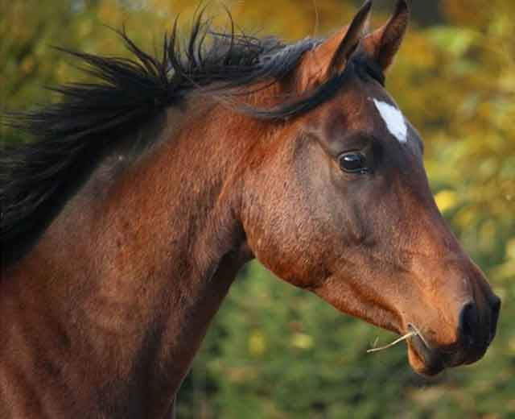

말의 수명은 얼마일까요?
의학과 기술의 발전으로 인간의 수명이 연장된 것과 같이 반려동물 역시 수명도 점점 늘어나고 있습니다. 과거에는 반려동물이라는 개념이 없었고 야생에서 길든 동물이 대부분이어서 야생에서 동물의 수명은 짧을 수밖에 없었죠. 반면 '말'은 오래전부터 이동수단으로도 쓰였던 동물이라 나름대로 관리를 잘 받은 측면이 있지만, 누구나 늘 그렇듯 자신이 키우고 관리하는 동물은 오래 살길 바랄 것입니다. 그렇다면 말의 수명은 얼마나 될까요? 어느 정도 살 수 있고 또 어떤 신호가 말이 늙어가는 것임을 의미하는지 알아보겠습니다!
[말의 평균 수명]
말은 평균적으로 25년~33년을 산다고 합니다. 평균 수명은 30세라고 나와 있지만, 어떻게 관리하느냐에 따라서 오차범위 5년 정도가 차이 날 수 있다고 합니다. 보통 사람들이 키우는 동물에 비하면 수명이 꽤 긴 편입니다.
지구 상에서 가장 오래 산 동물은 올드 빌리라는 이름을 갖고 있으며, 62년을 살았다고 합니다.
특별한 경우긴 하지만 정해진 평균 수명보다 더 오래 살았다는 것은 결국 어떻게 키우느냐에 따라서 충분히 달라질 수 있음을 의미하겠죠.
말이 가장 활발한 성장을 보일 때는 5~12살 사이라고 하며, 그 이후부터는 장년기로 접어들고 20세가 넘으면 노년의 길을 걷는다고 합니다.
하지만 말은 4~5세가 되면 성마의 크기나 높이에 도달하고 청년기 동안에는 신체적, 정신적 성숙을 계속해서 거듭한다고 합니다.
[말이 늙어 간다는 신호]
어떻게 관리하느냐에 따라서 늙어가는 속도나 수명도 달라질 수 있습니다. 하지만 아무리 잘 관리한다고 하더라도 나이가 들어가는 것을 막을 순 없는 일이죠. 그래서 여러 가지 신호를 통해 말의 나이가 들었음을 알 수 있는 데요. 어떤 변화들이 나이가 들었음을 보여주는지 알아보겠습니다.
1) 눈과 입 주변에 회색 털이 자랍니다.
2) 피부색이 점점 옅어지고, 털과 피부의 윤기를 잃어가는 것을 볼 수 있습니다.
3) 근육과 관절이 약해지면서 발걸음 균형이 좋지 않습니다.
4) 이전보다 식욕이 왕성하지 않습니다.
5) 눈동자에 생기를 잃거나 움푹 꺼져있는 것을 볼 수 있습니다.
6) 등과 허리가 곧지 않고 내려가 있는 것이 관찰됩니다.
사람의 60살과 말의 20세를 비슷한 시기로 봅니다. 말의 평균 수명이 30년 전후라는 점을 고려한다면 비슷한 시기라고 볼 수 있겠죠. 사람의 건강도 무엇을 먹고, 무엇을 하느냐에 따라서 달라집니다. 말도 어릴 때부터 어떤 교육을 받고 어떤 식단에 맞춰 성장하느냐에 따라서 수명이 달라질 수 있을 것입니다. 건강한 말의 생애주기를 그려나가고 싶다면, 말의 건강관리를 잘 숙지하시고 성장 과정에 맞춰 준비하는 것이 좋겠죠?
[출처] 말의 수명은 얼마일까요? ｜ 작성자 땡구와뽀냥이